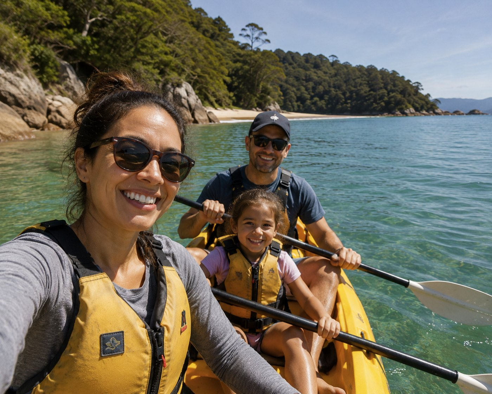
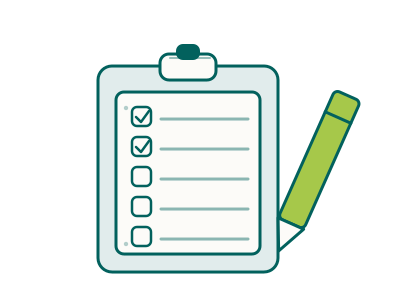

Plan Ethicare — your move, all in one place
Free, no account
Your new life starts with a plan.
Moving to New Zealand or Australia is a big step. Plan Ethicare helps you explore what’s possible and work through the practicalities, with your career, your family and your future in mind.
From choosing where to live to finding a role and settling in, bring your next steps together in one place.

Free to use, with no account. Whether you find your role through Ethicare, apply directly or use another recruiter, this plan is yours.
See how Plan Ethicare works
A quick walk through what the plan does, and how to make it your own.
Pressing play loads the video from its host. Nothing is loaded, and no cookie is set, until you do.
Every stage stays open to you whatever you have ticked off. The order is the order most people need, not a rule.
Your packGuides you add as you go collect here.Rather we picked this up with you?
Send us what you have so far and we will read it before we speak. Nothing goes anywhere until you press send — and you can see exactly what it contains below.
What gets sent
That is the whole of it. We do not receive your browsing, anything you typed into the other tools, or the plan itself — only this summary of where you have got to.
Let’s talk about your next role
In the meantime, explore the guides and tools and keep building your move at your own pace.
Keep this plan
Your answers shape every tool on the site; change them in the strip at the top and everything follows.

Take it with you
As a document
Your stages, answers, saved pages and next step, ready to view, print or download. A fixed copy — it won’t change as your plan does.
On another device
Nothing moves from one device to another on its own. This link is what carries it: open it on your phone or another computer and your answers, ticked stages and saved pages come with you.
Your file
Pages you’ve saved, what you’ve read, and your notes.